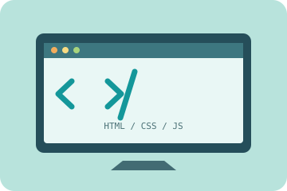

Front-end Developer
Being the ultra masters of JavaScript, the order of the Front-enders is known to create user interfaces that fill the users with absolute pleasure.
Heroes of JavaScript and HTML is a "Heroes of Might and Magic"-like game, but for code nerds. Each hero has its unique coding abilities and based on them he can develop software applications.
Currently the game has only four hero types:
Being the ultra masters of JavaScript, the order of the Front-enders is known to create user interfaces that fill the users with absolute pleasure.
The movement of the Mobile developers is the brand new, yet in their short time they already manage to amaze the people of the worlds beyond with creative applications.
The sect of the Web developers is the oldest there is. They prefer the old ways and rarely move to modern stuff. The Old Religion gives them powers of small gods.

The QAs are the desiders of fates! They always have the final word, and all gods and mortals are bound to obey them.